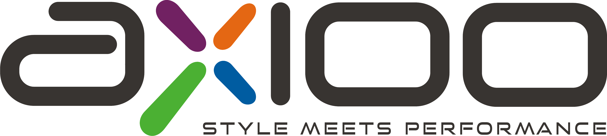
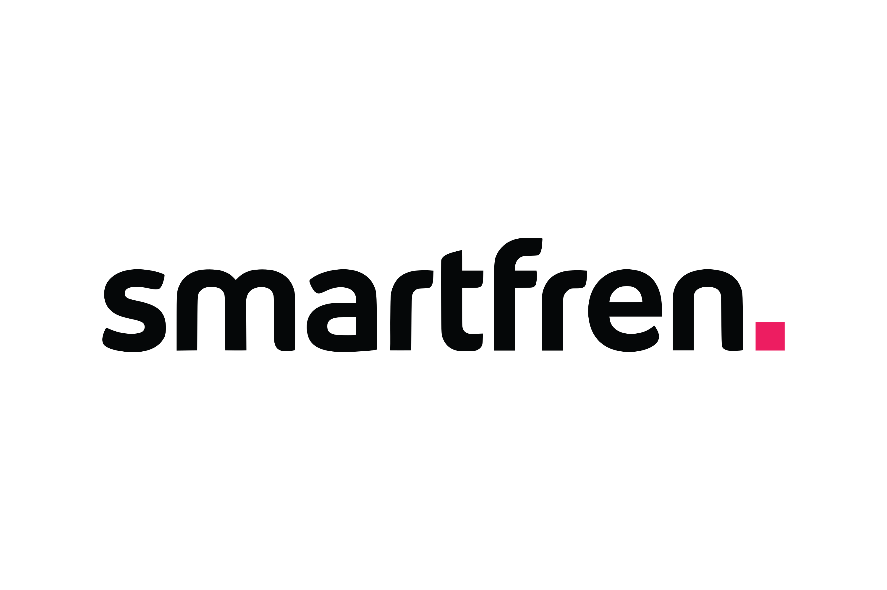
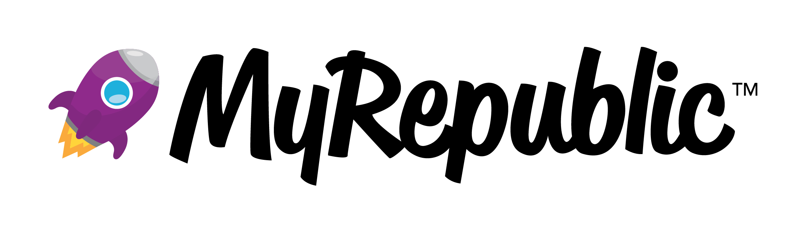
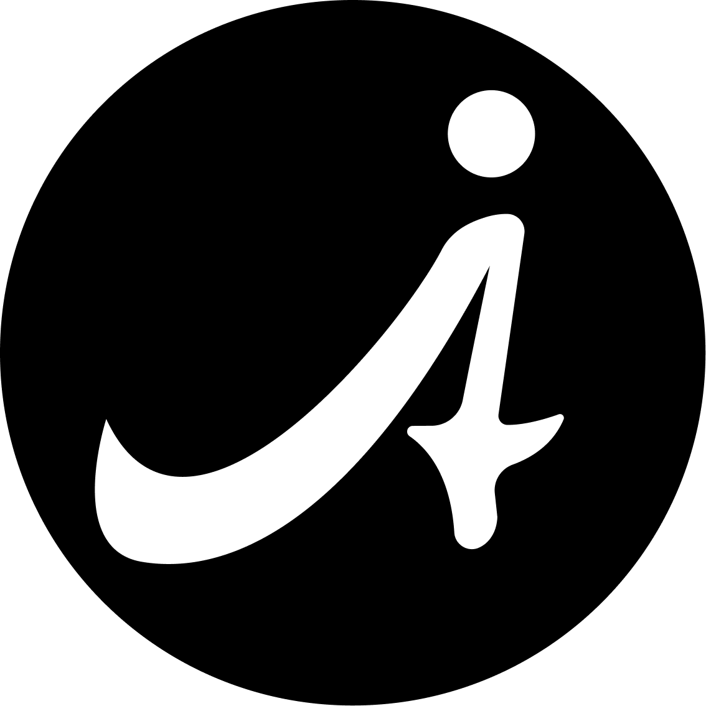
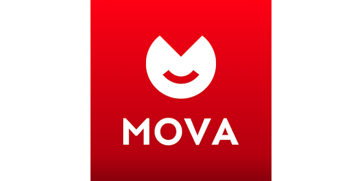
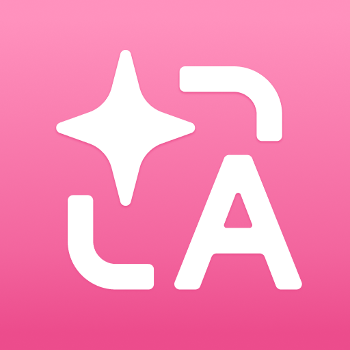

Halo, Gue Yochef Arianto
Kreator TECH yang fokus ke impact, storytelling, dan...
part-time peternak ayam.
Kreator TECH yang fokus ke impact, storytelling, dan...
part-time peternak ayam.
Pecahkan rekor skor tertinggi untuk membantu Yochef mengurus ayam-ayamnya di halaman belakang!
Pernah Berkolaborasi Dengan






Dan masih banyak lagi
Pengikut di Semua Platform
Total Tayangan
Brand Klien
Tahun Pengalaman
Sorotan beberapa kolaborasi dan konten personal yang mencapai jutaan tayangan (Tiktok) Tau sendiri kan bakal segila apa kalo mirror ke IG juga🤤.
"Kerja bareng Yochef itu gila sih. Visualnya dapet banget vibe cinematic-nya, plus pemahamannya soal AI bikin konten brand kita stand out dari kompetitor. Views-nya langsung tembus KPI di hari pertama!"
Marketing Director, TechBrand
"Awalnya ragu karena brief dari kita agak teknis dan kaku. Tapi Yochef berhasil bikin produk kita jadi super gampang dipahami penonton dan estetik banget. Sangat kooperatif, pasti bakal repeat order."
Founder, Startup AI
"Gak pernah absen nontonin kontennya. Transisinya smooth parah dan storytelling-nya selalu daging. Tapi jujur, yang bikin gue selalu nungguin tuh update soal ayam-ayamnya sih. Plot twist mulu wkwk."
Sesama Kreator
Pilih jenis layanan kolaborasi yang sesuai dengan kebutuhan campaign Anda.
Interaksi langsung dengan fitur interaktif & link.
Fokus untuk FYP & audiens vertikal.
Estetika tinggi untuk konversi brand.
Upload ke platform sebelah (Cross-post).
Disesuaikan dengan brief spesifik campaign.
Kerjasama eksklusif jangka panjang.